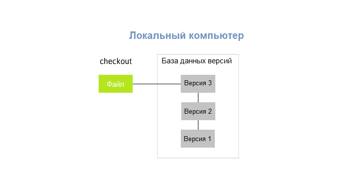
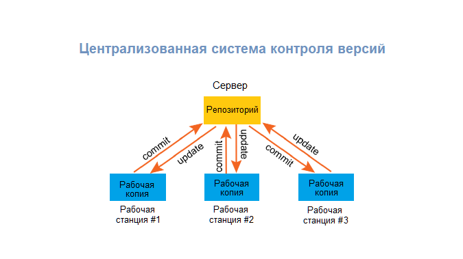
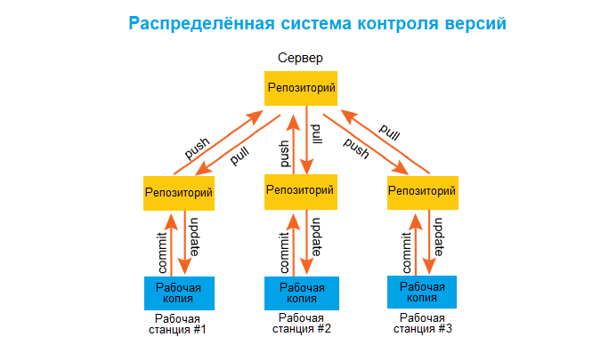

Системы контроля версий (СКВ, VCS, Version Control Systems) позволяют разработчикам сохранять все изменения, внесённые в код. При возникновении проблем они могут просто откатить код до рабочего состояния и не тратить часы на поиски ошибок. СКВ также позволяют нескольким разработчикам работать над одним проектом и сохранять внесённые изменения независимо друг от друга. При этом каждый участник команды видит, над чем работают коллеги.
Теперь вы знаете, что такое система контроля версий. Однако они тоже бывают разными. Существует три типа СКВ: локальная, централизованная и распределённая.

В качестве метода контроля версий можно копировать файлы в отдельную директорию. Изменения сохраняются в виде наборов патчей, где каждый патч датируется и получает отметку времени. Таким образом, если код перестаёт работать, наборы патчей можно совместить, чтобы получить исходное состояние файла. Такой подход всё ещё распространён среди разработчиков.
ЦСКВ были созданы для решения проблемы взаимодействия с другими разработчиками. Такие системы имеют единственный сервер, содержащий все версии файлов, и некоторое количество клиентов, которые получают файлы из этого централизованного хранилища и там же их сохраняют. Тем не менее, такой подход имеет существенный недостаток — выход сервера из строя обернётся потерей всех данных. Кроме того, в таких системах может быть затруднена одновременная работа нескольких разработчиков над одним файлом.

Недостаток ЦСКВ был исправлен в РСКВ, клиенты которых не просто скачивают снимок всех файлов (состояние файлов на определённый момент времени), а полностью копируют репозиторий. Это значит, что у каждого клиента есть копия всего исходного кода и внесённых изменений. В этом случае, если один из серверов выйдет из строя, любой клиентский репозиторий может быть скопирован на другой сервер для продолжения работы. Ещё одним преимуществом РСКВ является то, что они могут одновременно взаимодействовать с несколькими удалёнными репозиториями. Благодаря этому разработчики могут параллельно работать над несколькими проектами. Именно поэтому Git сейчас так популярен.
Git — распределённая система контроля версий, которая даёт возможность разработчикам отслеживать изменения в файлах и работать над одним проектом совместно с коллегами. Она была разработана в 2005 году Линусом Торвальдсом, создателем Linux, чтобы другие разработчики могли вносить свой вклад в ядро Linux. Git известен своей скоростью, простым дизайном, поддержкой нелинейной разработки, полной децентрализацией и возможностью эффективно работать с большими проектами.
Подход Git к хранению данных похож на набор снимков миниатюрной файловой системы. Каждый раз, когда вы сохраняете состояние своего проекта в Git, система запоминает, как выглядит каждый файл в этот момент, и сохраняет ссылку на этот снимок.
Преимущества Git:
Git-репозиторий , загруженный на GitHub, доступен с помощью интерфейса командной строки Git и Git-команд. Также есть и другие функции: документация, запросы на принятие изменений (pull requests), история коммитов, интеграция со множеством популярных сервисов, email-уведомления, эмодзи, графики, вложенные списки задач, система @упоминаний, похожая на ту, что в Twitter, и т.д. Кроме GitHub есть другие сервисы, которые используют Git, — например, Bitbucket и GitLab. Вы можете разместить Git-репозиторий на любом из них.
Эта команда используется для создания GIT репозитория. Пример использования:
git init
Одна из самых часто используемых git команд. Она может быть использована для указания пользовательских настроек, таких как электронная почта, имя пользователя, формат и т.д. К примеру, данная команда используется для установки адреса электронной почты:
git config --global user.email адрес@gmail.com
Команда git add может быть использована для добавления файлов в индекс. К примеру, следующая команда добавит файл под названием temp.txt присутствующий в локальном каталоге в индекс:
git add temp.txt
Команда git commit используется для коммита изменений в файлах проекта. Обратите внимание, что коммиты не сразу попадают на удаленный репозиторий. Применение:
git commit –m “Сообщение идущее вместе с коммитом”
git push еще одна из часто используемых git команд. Позволяет поместить изменения в главную ветку удаленного хранилища связанного с рабочим каталогом. Например: git push origin master
git push origin master
Команда pull используется для объединения изменений, присутствующих в удаленном репозитории, в локальный рабочий каталог. Применение:
git pull
Команда git branch может быть использована для отображения, создания или удаления веток. Для отображения всех существующих веток в репозитории введите:
git branch
Для удаления ветки:
git branch –d <имя-ветки>
Команда git checkout может быть использована для создания веток или переключения между ними. К примеру, следующий код создаст новую ветку и переключится на нее:
command git checkout -b <имя-ветки>

К слову, этот джентльмен и есть Линус Торвальдс, создатель системы Linux и GIT.